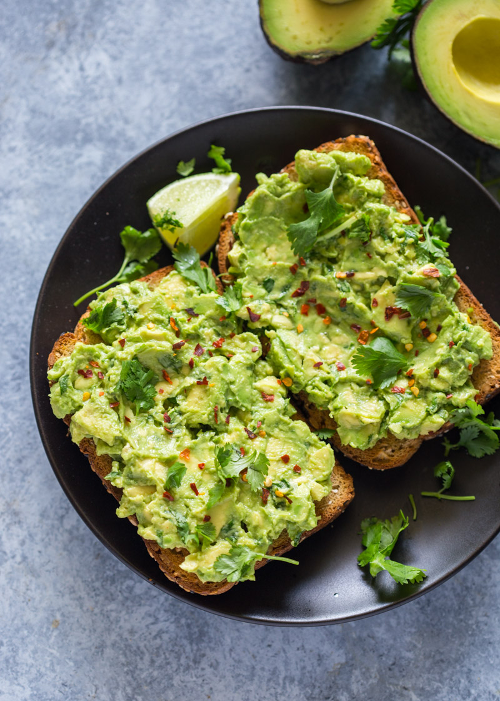

Toast

Avocado Toast
I like to use this recipe when I have a ripe avocado that I don't want to waste.
It is absolutely delicious and a wonderful source of fiber and fatty acids.
Feel free to get creative with the ingredients!
Substitute cilantro with mint or parsley,
or chia seeds with sesame or poppy seeds.
Ingredients
- 2 slices whole grain bread
- 1/2 avocado
- 2 tablespoons chopped fresh cilantro, or more to taste
- 1 teaspoon Meyer lemon juice, or to taste
- ¼ teaspoon Meyer lemon zest
- 1 pinch cayenne pepper
- 1 pinch fine sea salt
- ¼ teaspoon chia seeds
Steps
- Toast bread slices to desired doneness, 3 to 5 minutes
- Mash Avocados in a bown
- stir in cilantro, Meyer lemon juice, Meyer lemon zest, cayenne pepper, and sea salt
- Spread avocado mixture onto toast
- top with chia seeds